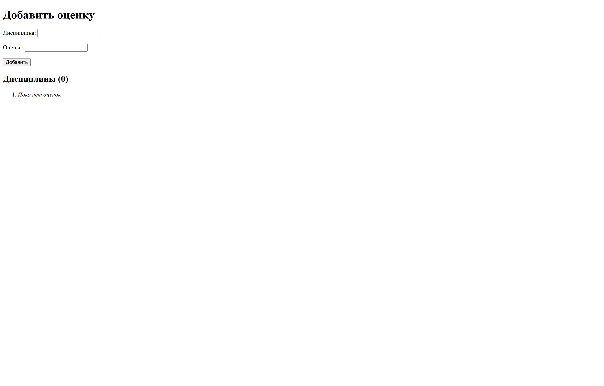
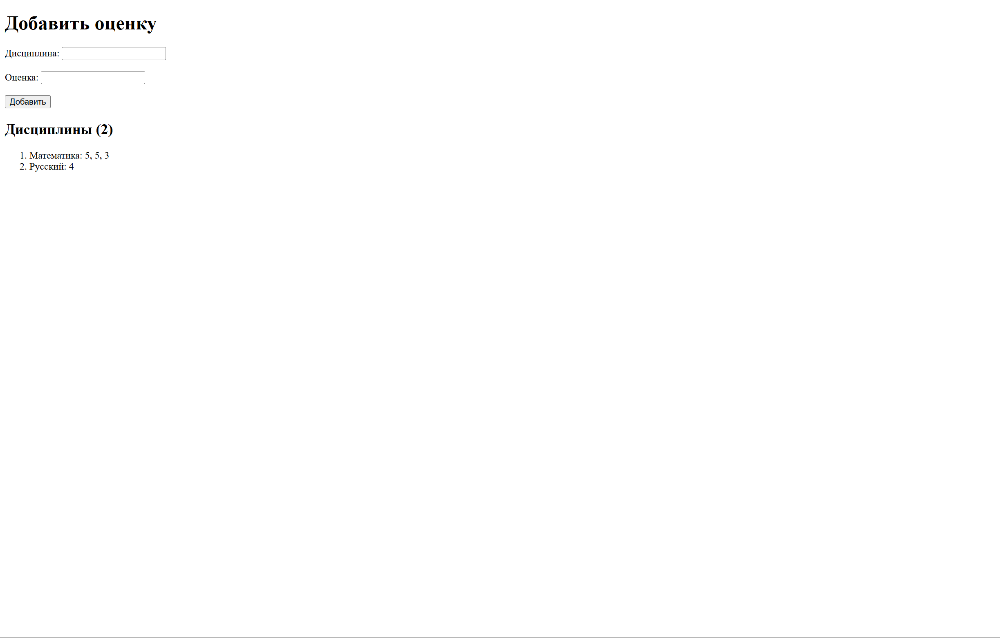

Отчет по лабораторной работе №1. Работа с сокетами
Задание 1
Реализовать клиентскую и серверную часть приложения. Клиент отправляет серверу сообщение «Hello, server», и оно должно отобразиться на стороне сервера. В ответ сервер отправляет клиенту сообщение «Hello, client», которое должно отобразиться у клиента.
Требования:
- Обязательно использовать библиотеку socket.
- Реализовать с помощью протокола UDP.
Реализация
Сервер:
import socket
SERVER_ADDRESS = ("127.0.0.1", 10000)
def main():
# socket.SOCK_DGRAM указывает, что это UDP-сокет
with socket.socket(socket.AF_INET, socket.SOCK_DGRAM) as server_socket:
server_socket.bind(SERVER_ADDRESS)
while True:
# Получение данных от клиента
data, addr = server_socket.recvfrom(1024)
print(data.decode("utf-8", errors="replace"))
# Отправка данных клиенту
message = "Hello, client"
server_socket.sendto(message.encode("utf-8"), addr)
if __name__ == "__main__":
main()
Клиент:
import socket
SERVER_ADDRESS = ("127.0.0.1", 10000)
def main():
with socket.socket(socket.AF_INET, socket.SOCK_DGRAM) as client_socket:
message = "Hello, server"
client_socket.sendto(message.encode("utf-8"), SERVER_ADDRESS)
data, _ = client_socket.recvfrom(1024)
print(data.decode("utf-8", errors="replace"))
if __name__ == "__main__":
main()
Пояснение:
Сервер: в контекстном менеджере создаётся UDP-сокет, связываю его с адресом и портом. В бесконечном цикле сервер ожидает получения данных от клиента, которые он декодирует и выводит в консоль. После чего отправляет сообщение клиенту
Клиент: в контекстном менеджере создаётся UDP-сокет, на адрес сервера отправляет закодированное сообщение серверу по UDP протоколу. После клиент получает от сервера, декодирует и выводит
Задание 2
Реализовать клиентскую и серверную часть приложения. Клиент запрашивает выполнение математической операции, параметры которой вводятся с клавиатуры. Сервер обрабатывает данные и возвращает результат клиенту.
Требования:
- Обязательно использовать библиотеку socket.
- Реализовать с помощью протокола TCP.
Реализация
Сервер:
import socket
import math
SERVER_ADDRESS = ("127.0.0.1", 10000)
def main():
# socket.SOCK_STREAM указывает, что это TCP-сокет
with socket.socket(socket.AF_INET, socket.SOCK_STREAM) as server_socket:
# Позволяем запускать сервер на том же порту
server_socket.setsockopt(socket.SOL_SOCKET, socket.SO_REUSEADDR, 1)
server_socket.bind(SERVER_ADDRESS)
server_socket.listen()
while True:
# При подключении клиента создаётся отдельный сокет conn
conn, addr = server_socket.accept()
try:
# Принимаем сообщение от клиента
data = conn.recv(1024)
if not data:
continue
values = list(map(float, data.decode("utf-8", errors="replace").split()))
if len(values) != 2 or not(values[0] > 0 and values[1] > 0):
raise ValueError
except ValueError:
conn.sendall("Необходимо передать 2 положительных числа через пробел".encode("utf-8"))
continue
else:
result = math.hypot(*values)
message = f"Гипотенуза треугольника со сторонами {values[0]} и {values[1]} равна {result}"
# Отправляем сообщение
conn.sendall(message.encode())
finally:
conn.close()
if __name__ == "__main__":
main()
Клиент:
import socket
SERVER_ADDRESS = ("127.0.0.1", 10000)
def main():
with socket.socket(socket.AF_INET, socket.SOCK_STREAM) as client_socket:
# Установка соединения с сервером
client_socket.connect(SERVER_ADDRESS)
# Отправка сообщения серверу
message = input()
client_socket.sendall(message.encode("utf-8"))
# Получение сообщения от сервера
data = client_socket.recv(1024)
print(data.decode("utf-8", errors="replace"))
if __name__ == "__main__":
main()
Пояснение:
Сервер: в контекстном менеджере создаётся TCP-сокет, сокет привязываетя к адресу и хосту и начинает прослушивание. При соединении сервер получает от клиента данные, декодирует их. Если данные верны, то считает гипотенузу и возвращает клиенту. Если данные не верны, то вызывается исключение и отправляется сообщение клиенту о неверных данных. После чего соединение закрывается
Клиент: в контекстном менеджере создаётся TCP-сокет, происходит соединение с сервером. Клиент отправляет закодированное сообщение серверу, после чего получает ответ от сервера и выводит его
Задание 3
Реализовать серверную часть приложения. Клиент подключается к серверу, и в ответ получает HTTP-сообщение, содержащее HTML-страницу, которая сервер подгружает из файла index.html.
Требования:
- Обязательно использовать библиотеку socket.
Реализация
Сервер:
import socket
SERVER_ADDRESS = ("127.0.0.1", 10000)
def main():
with socket.socket(socket.AF_INET, socket.SOCK_STREAM) as server_socket:
server_socket.setsockopt(socket.SOL_SOCKET, socket.SO_REUSEADDR, 1)
server_socket.bind(SERVER_ADDRESS)
server_socket.listen()
while True:
conn, addr = server_socket.accept()
try:
response = conn.recv(1024).decode("utf-8")
if not response:
continue
headers = response.split('\r\n', 1)[0].split()
if len(headers) < 3:
send_response(conn, create_response(status="HTTP/1.1 400 Bad Request".encode("utf-8")))
continue
method, path, _ = headers
if method == "GET" and path in ("/index", "/", "/index.html"):
send_response(conn, create_response(filepath = "Lab1/task3/" + path))
elif method != "GET":
send_response(conn, create_response(status = b"HTTP/1.1 405 Method Not Allowed"))
else:
send_response(conn, create_response(status = b"HTTP/1.1 404 Not Found"))
finally:
conn.close()
def create_response(filepath : str | None = None, status : bytes =b"HTTP/1.1 200 OK") -> bytes:
body = b""
if filepath:
body = read_file(filepath)
headers = get_headers(body)
return status + b"\r\n" + headers + b"\r\n" + body
def get_headers(body: bytes) -> bytes:
return (
"Content-Type: text/html; charset=utf-8\r\n"
f"Content-Length: {len(body)}\r\n"
"Connection: close\r\n"
).encode("utf-8")
def read_file(filename : str = "third/index.html") -> bytes:
with open(filename, "rb") as f:
body = f.read()
return body
def send_response(conn, response: bytes):
conn.sendall(response)
if __name__ == "__main__":
main()
Клиент:
import socket
SERVER_ADDRESS = ("127.0.0.1", 10000)
def main():
with socket.socket(socket.AF_INET, socket.SOCK_STREAM) as client_socket:
client_socket.connect(SERVER_ADDRESS)
request = (
"GET /index.html HTTP/1.1\r\n"
"Host: 127.0.0.1:10000\r\n"
"User-Agent: Mozilla/5.0\r\n"
"Accept: text/html\r\n"
"\r\n"
)
client_socket.sendall(request.encode("utf-8"))
data = b""
while True:
chunk = client_socket.recv(1024)
if not chunk:
break
data += chunk
print(data.decode("utf-8"))
if __name__ == "__main__":
main()
Пояснение:
Сервер: в контекстном менеджере создаётся TCP-сокет, сокет привязываетя к адресу и хосту и начинает прослушивание. Когда подключается клиент и посылает HTTP-сообщение серверу, сервер парсит сообщение, и если оно корректное, то отправляет содержимое страницы HTML из файла index.html. Если HTTP-сообщение некорректное, отправляет соответствующий код ошибки
Клиент: в контекстном менеджере создаётся TCP-сокет, происходит соединение с сервером. Клиент отправляет HTTP-сообщение серверу, после чего получает ответ от сервера в виде HTTP-сообщения с содержмимым страницы HTML
Задание 4
Реализовать двухпользовательский или многопользовательский чат. Для максимального количества баллов реализуйте многопользовательский чат.
Требования:
- Обязательно использовать библиотеку socket.
- Для многопользовательского чата необходимо использовать библиотеку threading.
- Протокол TCP: 100% баллов.
- Протокол UDP: 80% баллов.
- Для UDP используйте threading для получения сообщений на клиенте.
- Для TCP запустите клиентские подключения и обработку сообщений от всех пользователей в потоках. Не забудьте сохранять пользователей, чтобы отправлять им сообщения.
Реализация
Сервер:
import socket
import threading
SERVER_ADDRESS = ("127.0.0.1", 10000)
# Множество всех подключенных клиентов. Lock защищает его от одновременной записи из разных потоков
clients = set()
clients_lock = threading.Lock()
def add_client(sock):
# Добавление клиента под Lock, чтобы защитить от гонки
with clients_lock:
clients.add(sock)
def remove_client(sock):
with clients_lock:
clients.discard(sock)
def broadcast(data, sender):
# Копирование списка клиентов
with clients_lock:
targets = tuple(clients)
# Рассылка сообщения всем клиента, кроме отправителя
dead = []
for client in targets:
if client is sender:
continue
try:
client.sendall(data)
except (ConnectionResetError, ConnectionAbortedError, OSError):
dead.append(client)
# Если при отправке клиенту произошла ошибка, то соединение с ним закрываетсяя, он удаляется из клиента
for client in dead:
remove_client(client)
try:
client.close()
except OSError:
pass
# Каждый клиент работает в отдельном потоке
def handle_client(sock):
try:
while True:
data = sock.recv(1024)
if not data:
break
broadcast(data, sock)
finally:
remove_client(sock)
sock.close()
def main():
with socket.socket(socket.AF_INET, socket.SOCK_STREAM) as server_socket:
server_socket.setsockopt(socket.SOL_SOCKET, socket.SO_REUSEADDR, 1)
server_socket.bind(SERVER_ADDRESS)
server_socket.listen()
while True:
sock, addr = server_socket.accept()
add_client(sock)
# Клиент добавляет в отдельный поток
threading.Thread(target=handle_client, args=(sock,), daemon=True).start()
if __name__ == "__main__":
main()
Клиент:
import socket
import threading
import sys
SERVER_ADDRESS = ("127.0.0.1", 10000)
# Приём сообщений сообщений от сервера
def recv_loop(sock):
while True:
try:
data = sock.recv(1024)
if not data:
print("Соединение закрыто сервером")
break
print(data.decode("utf-8").strip())
except (ConnectionResetError, ConnectionAbortedError, OSError):
break
def start_process():
if len(sys.argv) < 2:
print("Использование: python client.py <имя>")
return
username = sys.argv[1]
main(username)
def main(username: str):
with socket.socket(socket.AF_INET, socket.SOCK_STREAM) as client_socket:
client_socket.connect(SERVER_ADDRESS)
# Отдельный поток для постоянного приёма данных, чтобы клиент мог одновременно печатать сообщения и получать новые из чата
threading.Thread(target=recv_loop, args=(client_socket,), daemon=True).start()
while True:
msg = input()
if msg == "\\quit":
break
msg = f"{username}:" + msg
client_socket.sendall((msg + "\n").encode("utf-8"))
if __name__ == "__main__":
start_process()
Пояснение:
Сервер: в контекстном менеджере создаётся TCP-сокет, сокет привязываетя к адресу и хосту и начинает прослушивание. В clients хранится множество всех пользователей. Clients_lock нужен, чтобы несколько потоков одновременно не пытались изменить clients. В add_clients и remove_clients добавляет и удаляет клиента из множества, функции обернуты в контекстный менеджер, чтобы доступ был потокобезопасным. В broadcast происходит рассылка сообщений. Берется копия текущего списка клиентов и в цикле каждомому отправляет сообщение, кроме отправителя. Если при отправке произошла ошибка, клиент удаляется. В handle_client читаются данные от клиента. Если данные пустые - клиент удаляется
Клиент: в контекстном менеджере создаётся TCP-сокет, происходит соединение с сервером. Когда клиент запускается из терминала, имя пользователя передаётся аргументом командной строки. Функция recv_loop предназначена для приёма сообщений. Она работает в отдельном потоке и постоянно слушает входящие сообщения от сервера. Если данных нет, то сервер закрывает соединение. Если пришли данные - вывод на экран
Задание 5
Написать простой веб-сервер для обработки GET и POST HTTP-запросов с помощью библиотеки socket в Python.
Сервер должен:
- Принять и записать информацию о дисциплине и оценке по дисциплине.
- Отдать информацию обо всех оценках по дисциплинам в виде HTML-страницы.
Реализация
Сервер:
import json
import socket
import sys
from email.parser import Parser
from functools import lru_cache
from urllib.parse import parse_qs, urlparse
MAX_LINE = 64*1024
MAX_HEADERS = 100
class MyHTTPServer:
def __init__(self, host, port, server_name):
self._host = host
self._port = port
self._server_name = server_name
self._grades = {}
def serve_forever(self):
# Запуск сервера на сокете, обработка входящих соединений
serv_sock = socket.socket(
socket.AF_INET,
socket.SOCK_STREAM,
proto=0)
try:
serv_sock.bind((self._host, self._port))
serv_sock.listen()
while True:
conn, _ = serv_sock.accept()
try:
self.serve_client(conn)
except Exception as e:
print('Client serving failed', e)
finally:
serv_sock.close()
def serve_client(self, conn):
# Обработка клиентского подключения
try:
req = self.parse_request(conn)
resp = self.handle_request(req)
self.send_response(conn, resp)
except ConnectionResetError:
conn = None
except Exception as e:
self.send_error(conn, e)
if conn:
req.rfile.close()
conn.close()
def parse_request(self, conn):
# функция для обработки заголовка http+запроса
rfile = conn.makefile('rb')
method, target, ver = self.parse_request_line(rfile)
headers = self.parse_headers(rfile)
host = headers.get('Host')
if not host:
raise HTTPError(400, 'Bad request', 'Host header is missing')
return Request(method, target, ver, headers, rfile)
def parse_request_line(self, rfile):
raw = rfile.readline(MAX_LINE + 1)
if len(raw) > MAX_LINE:
raise HTTPError(400, 'Bad request',
'Request line is too long')
req_line = str(raw, 'iso-8859-1')
words = req_line.split()
if len(words) != 3:
raise HTTPError(400, 'Bad request',
'Malformed request line')
method, target, ver = words
if ver != 'HTTP/1.1':
raise HTTPError(505, 'HTTP Version Not Supported')
return method, target, ver
def parse_headers(self, rfile):
# Функция для обработки headers
headers = []
while True:
line = rfile.readline(MAX_LINE + 1)
if len(line) > MAX_LINE:
raise HTTPError(494, 'Request header too large')
if line in (b'\r\n', b'\n', b''):
break
headers.append(line)
if len(headers) > MAX_HEADERS:
raise HTTPError(494, 'Too many headers')
sheaders = b''.join(headers).decode('iso-8859-1')
return Parser().parsestr(sheaders)
def handle_request(self, req):
# Функция для обработки url в соответствии с нужным методом.
if req.path == '/grade' and req.method == 'POST':
return self.handle_post_grade(req)
if req.path in ('/', '/grades') and req.method == 'GET':
return self.handle_get_grades(req)
raise HTTPError(404, 'Not found')
def send_response(self, conn, resp):
# Функция для отправки ответа
wfile = conn.makefile('wb')
status_line = f'HTTP/1.1 {resp.status} {resp.reason}\r\n'
wfile.write(status_line.encode('iso-8859-1'))
if resp.headers:
for (key, value) in resp.headers:
header_line = f'{key}: {value}\r\n'
wfile.write(header_line.encode('iso-8859-1'))
wfile.write(b'\r\n')
if resp.body:
wfile.write(resp.body)
wfile.flush()
wfile.close()
def send_error(self, conn, err):
try:
status = err.status
reason = err.reason
body = (err.body or err.reason).encode('utf-8')
except:
status = 500
reason = b'Internal Server Error'
body = b'Internal Server Error'
resp = Response(status, reason,
[('Content-Length', len(body))],
body)
self.send_response(conn, resp)
def handle_post_grade(self, req):
discipline = (req.query.get('discipline') or [None])[0]
grade = (req.query.get('grade') or [None])[0]
# Если параметр не получен из строки запроса, то проверяются параметры в теле запроса
if not discipline or not grade:
ctype = (req.headers.get('Content-Type') or '').split(';', 1)[0].strip()
if ctype == 'application/x-www-form-urlencoded':
# Чтение тела запроса
raw = req.body()
if raw:
data = parse_qs(raw.decode('utf-8'), keep_blank_values=True)
discipline = (data.get('discipline') or [None])[0]
grade = (data.get('grade') or [None])[0]
if not discipline or not grade:
raise HTTPError(400, 'Bad request', 'Fields "discipline" and "grade" are required')
self._grades.setdefault(discipline, []).append(str(grade))
headers = [('Location', '/'), ('Content-Length', '0'), ('Connection', 'close')]
return Response(303, 'See Other', headers, b'')
def handle_get_grades(self, req):
# Извлечение данных из заголовка
accept = req.headers.get('Accept', '')
# Возвращение ответа в виде json
if 'application/json' in accept:
# сериализация словарь в json
body = json.dumps(self._grades, ensure_ascii=False).encode('utf-8')
headers = [
('Content-Type', 'application/json; charset=utf-8'),
('Content-Length', str(len(body)))
]
return Response(200, 'OK', headers, body)
items = []
if self._grades:
for disc, grades in sorted(self._grades.items()):
items.append(f'<li>{disc}: {", ".join(grades)}</li>')
items_html = '\n'.join(items)
else:
items_html = '<li><em>Пока нет оценок</em></li>'
with open("Lab1/task5/index.html", "r", encoding="utf-8") as f:
template = f.read()
html = template.format(
items_html=items_html,
count=len(self._grades)
)
body = html.encode('utf-8')
headers = [
('Content-Type', 'text/html; charset=utf-8'),
('Content-Length', str(len(body)))
]
return Response(200, 'OK', headers, body)
class Request:
def __init__(self, method, target, version, headers, rfile):
self.method = method
self.target = target
self.version = version
self.headers = headers
self.rfile = rfile
@property
def path(self):
return self.url.path
@property
@lru_cache(maxsize=None)
def query(self):
return parse_qs(self.url.query)
@property
@lru_cache(maxsize=None)
def url(self):
return urlparse(self.target)
def body(self):
size = self.headers.get('Content-Length')
if not size:
return b''
try:
n = int(size)
except ValueError:
raise HTTPError(400, 'Bad Request', 'Invalid Content-Length')
return self.rfile.read(n)
class Response:
def __init__(self, status, reason, headers=None, body=None):
self.status = status
self.reason = reason
self.headers = headers
self.body = body
class HTTPError(Exception):
def __init__(self, status, reason, body=None):
super()
self.status = status
self.reason = reason
self.body = body
if __name__ == '__main__':
host = sys.argv[1]
port = int(sys.argv[2])
name = sys.argv[3]
serv = MyHTTPServer(host, port, name)
try:
serv.serve_forever()
except KeyboardInterrupt:
pass
Сервер: в контекстном менеджере создаётся TCP-сокет, он привязывается к хосту и порту и начинает прослушивание. В методе parse_request разбирается строка запроса и заголовки, проверяется наличие Host. В handle_request маршрутизируются запросы: POST /grade вызывает handle_post_grade, GET / или /grades вызывает handle_get_grades. В handle_post_grade из query или тела формы читаются discipline и grade, если они не переданы – возвращается 400, иначе сохраняются в словарь как список оценок по предмету и возвращается 303 See Other с редиректом на список. В handle_get_grades при Accept: application/json возвращается JSON, иначе HTML-страница с формой для добавления оценки и нумерованным списком предметов и их оценок. В send_response формируется статусная строка, заголовки и тело, в send_error возвращается простой текст с кодом ошибки. Хранилище представляет собой словарь предмет → список оценок.
Интерфейс

После добавления оценок:
